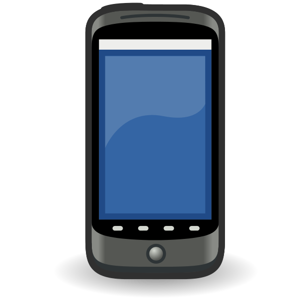

<ion-header translucent>
  <ion-toolbar>
    <ion-searchbar></ion-searchbar>
    <ion-buttons slot="end">
      <ion-button slot="primary" (click)="scan()">
        <ion-icon slot="icon-only" name="qr-scanner"></ion-icon>
      </ion-button>
    </ion-buttons>
  </ion-toolbar>
</ion-header>

<ion-content fullscreen>
  <ion-list>
    <ion-list-header>
      <ion-label class=".ion-text-center">My Devices</ion-label>
    </ion-list-header>
    <div tappable *ngFor="let device of deviceList">
      <div *ngIf="device.deviceStatus=='borrowed' && device.borrower==getUserName()">
        <ion-item-sliding>
          <ion-item routerLink="/profile/{{ device.id }}">
            <ion-avatar slot="start">
              
            </ion-avatar>
            <ion-label>
              <h2>{{device?.deviceName}}</h2>
              <p><strong>{{device?.serialNumber}}</strong></p>
            </ion-label>
          </ion-item>
          <ion-item-option side="end">
            Un-assign
          </ion-item-option>
        </ion-item-sliding>
      </div>
    </div>
  </ion-list>

  <ion-list>
    <ion-list-header>
      <ion-label class=".ion-text-center">Device List</ion-label>
    </ion-list-header>
    <div tappable *ngFor="let device of deviceList">
      <ion-item-sliding>
        <ion-item routerLink="/device-detail/{{ device.id }}">
          <ion-avatar slot="start">
            
          </ion-avatar>
          <ion-label>
            <h2>{{device?.deviceName}}</h2>
            <p><strong>{{device?.serialNumber}}</strong></p>
          </ion-label>
        </ion-item>
        <ion-item-options side="end">
          <ion-item-option>
            Borrow
          </ion-item-option>
          <div *ngIf="getUserRole()=='admin'">
          <ion-item-option>
            Edit
          </ion-item-option>
          </div>
        </ion-item-options>
      </ion-item-sliding>
    </div>
  </ion-list>
  <ion-fab horizontal="end" vertical="bottom" slot="fixed">
      <ion-fab-button color="primary" routerLink="/add-device">
        <ion-icon name="add"></ion-icon>
      </ion-fab-button>
    </ion-fab>
</ion-content>